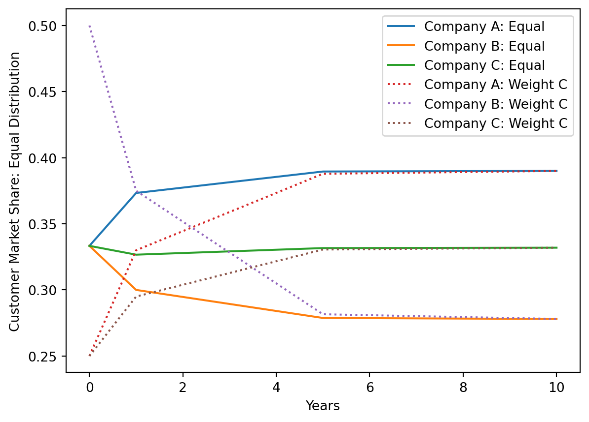
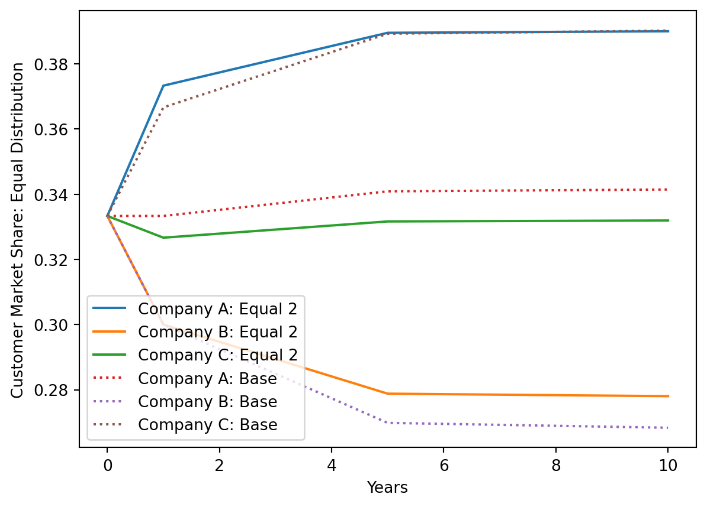
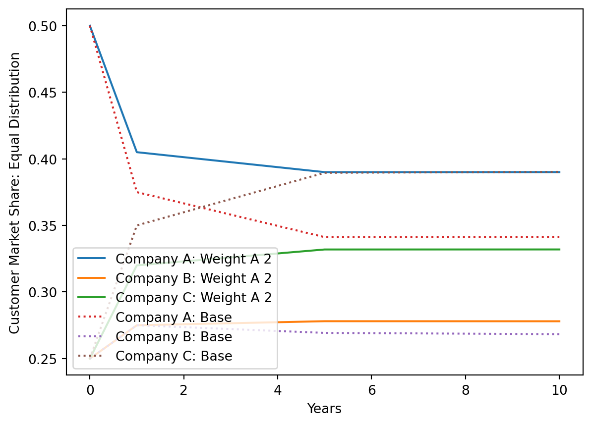
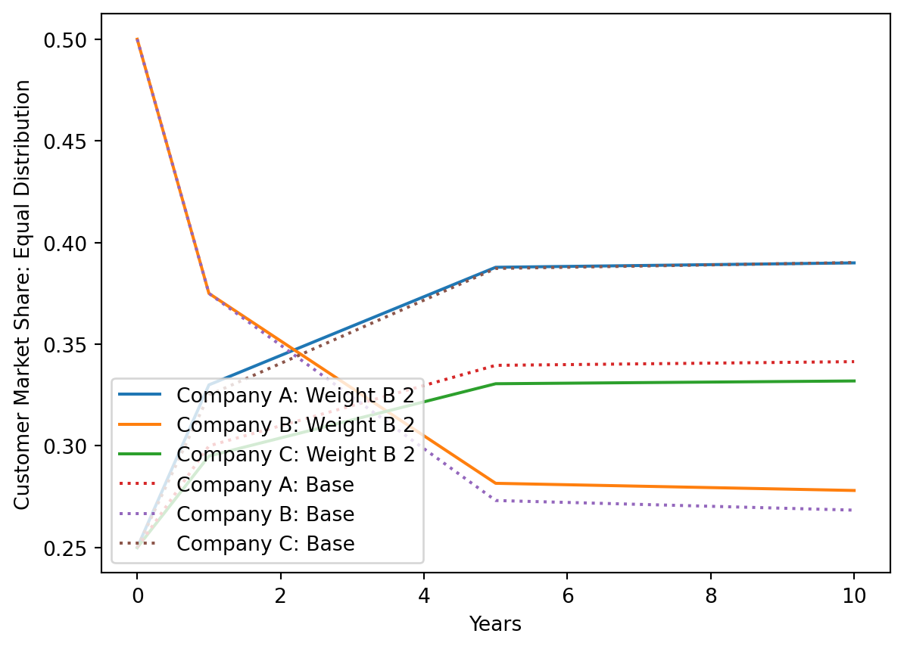
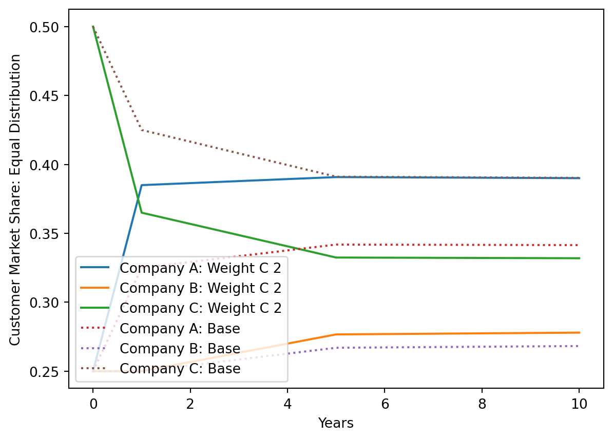
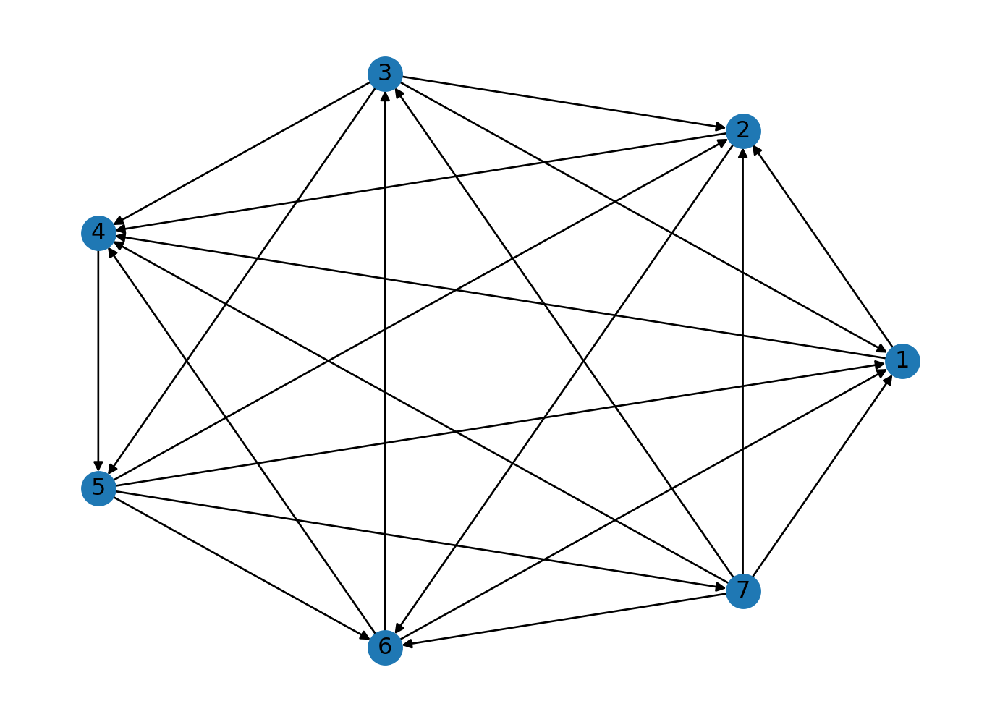
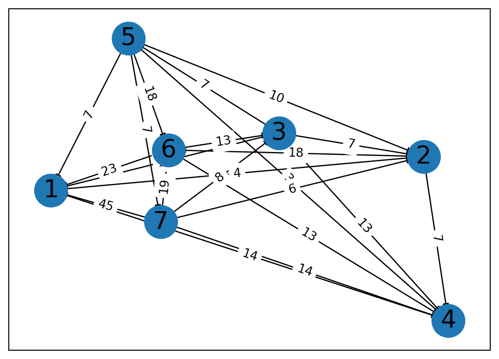

import sympy as sp
import matplotlib.pyplot as plt
import numpy as npMarkov Chains
# Markov chain
M = sp.Matrix([
[0.5, 0.2, 0.3],
[0.2, 0.6, 0.1],
[0.3, 0.2, 0.6]
])orig = sp.Matrix([sp.Rational(1,3), sp.Rational(1,3), sp.Rational(1,3)])
(M**3)*orig\(\displaystyle \left[\begin{matrix}0.339\\0.275333333333333\\0.385666666666667\end{matrix}\right]\)
As demonstrated, after 3 years, the Markov chain slightly favors C, with B being the least favored
plan1 = sp.Matrix([
[0.5, 0.2 + .6*0.2, 0.3],
[0.2, 0.6*.8, 0.1],
[0.3, 0.2, 0.6]
])
plan2 = sp.Matrix([
[0.5, 0.2, 0.3+0.6*.2],
[0.2, 0.6, 0.1],
[0.3, 0.2, 0.6*0.8]
])
plan1\(\displaystyle \left[\begin{matrix}0.5 & 0.32 & 0.3\\0.2 & 0.48 & 0.1\\0.3 & 0.2 & 0.6\end{matrix}\right]\)
equal = sp.Matrix([sp.Rational(1,3), sp.Rational(1,3), sp.Rational(1,3)])
weight_a = sp.Matrix([sp.Rational(5,10), sp.Rational(25,100), sp.Rational(25,100)])
weight_b = sp.Matrix([sp.Rational(25,100), sp.Rational(5,10), sp.Rational(25,100)])
weight_c = sp.Matrix([sp.Rational(25,100), sp.Rational(25,100), sp.Rational(5,10)])Would be really useful to have comments here. What are equal, weight_a, weight_b, and weight_c? I figured it it out but it took me a minute…
# Varying states for plan 1
equal1 = [equal, (plan1 ** 1)*equal, (plan1 ** 5)*equal, (plan1 ** 10)*equal]
weight_a1 = [weight_a, (plan1 ** 1)*weight_a, (plan1 ** 5)*weight_a, (plan1 ** 10)*weight_a]
weight_b1 = [weight_b, (plan1 ** 1)*weight_b, (plan1 ** 5)*weight_b, (plan1 ** 10)*weight_b]
weight_c1 = [weight_c, (plan1 ** 1)*weight_c, (plan1 ** 5)*weight_c, (plan1 ** 10)*weight_c]
plan1_states = [equal1, weight_a1, weight_b1, weight_c1]
# Varying states for plan 2
equal2 = [equal, (plan2 ** 1)*equal, (plan2 ** 5)*equal, (plan2 ** 10)*equal]
weight_a2 = [weight_a, (plan2 ** 1)*weight_a, (plan2 ** 5)*weight_a, (plan2 ** 10)*weight_a]
weight_b2 = [weight_b, (plan2 ** 1)*weight_b, (plan2 ** 5)*weight_b, (plan2 ** 10)*weight_b]
weight_c2 = [weight_c, (plan2 ** 1)*weight_c, (plan2 ** 5)*weight_c, (plan2 ** 10)*weight_c]
plan2_states = [equal2, weight_a2, weight_b2, weight_c2]::: column-margin I’d like to see you rewrite this using a function that takes in the plan matrix and the initial state, and returns the state after 1, 5, and 10 years. This will make it easier to read your code to understand what it’s doing (and it’s easier for you to write in general!).
time = [0,1,5,10]
companies = ['A', 'B', 'C']# Find company max distribution
def plan_max(company, plan):
result = plan[0][3][company]
dis = 0
if result < weight_a1[3][company]:
result = plan[1][3][company]
dis = 1
if result < weight_b1[3][company]:
result = plan[2][3][company]
dis = 2
if result < weight_c1[3][company]:
result = plan[3][3][company]
dis = 3
return result, disI can’t understand what this is doing, because I don’t know what the ‘plan’ variable will be when I call this function. I’m trying to look below to see but it’s hard to follow.
# A's performance under different ways, original plan
base = sp.Matrix([((M**10)*equal)[0], ((M**10)*weight_a)[0], ((M**10)*weight_b)[0], ((M**10)*weight_c)[0]])
base_equal = [equal, (M ** 1)*equal, (M ** 5)*equal, (M ** 10)*equal]
base_a = [weight_a, (M ** 1)*weight_a, (M ** 5)*weight_a, (M ** 10)*weight_a]
base_b = [weight_b, (M ** 1)*weight_b, (M ** 5)*weight_b, (M ** 10)*weight_b]
base_c = [weight_c, (M ** 1)*weight_c, (M ** 5)*weight_c, (M ** 10)*weight_c]
plan1_dis = sp.Matrix([((plan1**10)*equal)[0], ((plan1**10)*weight_a)[0], ((plan1**10)*weight_b)[0], ((plan1**10)*weight_c)[0]])
plan2_dis = sp.Matrix([((plan2**10)*equal)[0], ((plan2**10)*weight_a)[0], ((plan2**10)*weight_b)[0], ((plan2**10)*weight_c)[0]])sum(plan1_dis - base)\(\displaystyle 0.156465181152655\)
sum(plan2_dis - base)\(\displaystyle 0.194330292122828\)
plan_max(0, plan2_states)(0.390033780497374, 0)plan2_dis\(\displaystyle \left[\begin{matrix}0.390033780497374\\0.390040976888677\\0.390005782377759\\0.390054582225684\end{matrix}\right]\)
As demonstrated, we can see that overall, Plan 2 performs the best in terms of Company A’s long term market-share. This is based 4 distributions: equal distribution, and 50%, 25%, 25% market shares for each company. Overall, Plan 2 performs the best when the distribution is equal. We will now overlay Plan 2’s best performance distribution compared to its worst performance distribution.
# Plan 1: Equal distribution
market = equal2
for i in range(3):
plt.plot(time, [market[0][i], market[1][i], market[2][i], market[3][i]], label=f"Company {companies[i]}: Equal")
market = weight_b2
for i in range(3):
plt.plot(time, [market[0][i], market[1][i], market[2][i], market[3][i]], label=f"Company {companies[i]}: Weight C", linestyle=":")
plt.ylabel('Customer Market Share: Equal Distribution')
plt.xlabel('Years')
plt.legend()
plt.show()
As demonstrated, Company A’s performance evens out through all distributions. We will now overlay a few distributions comparing the original plan to Plan 2.
market = equal2
for i in range(3):
plt.plot(time, [market[0][i], market[1][i], market[2][i], market[3][i]], label=f"Company {companies[i]}: Equal 2")
market = base_equal
for i in range(3):
plt.plot(time, [market[0][i], market[1][i], market[2][i], market[3][i]], label=f"Company {companies[i]}: Base", linestyle=":")
plt.ylabel('Customer Market Share: Equal Distribution')
plt.xlabel('Years')
plt.legend(loc=3)
plt.show()
market = weight_a2
for i in range(3):
plt.plot(time, [market[0][i], market[1][i], market[2][i], market[3][i]], label=f"Company {companies[i]}: Weight A 2")
market = base_a
for i in range(3):
plt.plot(time, [market[0][i], market[1][i], market[2][i], market[3][i]], label=f"Company {companies[i]}: Base", linestyle=":")
plt.ylabel('Customer Market Share: Equal Distribution')
plt.xlabel('Years')
plt.legend(loc=3)
plt.show()
market = weight_b2
for i in range(3):
plt.plot(time, [market[0][i], market[1][i], market[2][i], market[3][i]], label=f"Company {companies[i]}: Weight B 2")
market = base_b
for i in range(3):
plt.plot(time, [market[0][i], market[1][i], market[2][i], market[3][i]], label=f"Company {companies[i]}: Base", linestyle=":")
plt.ylabel('Customer Market Share: Equal Distribution')
plt.xlabel('Years')
plt.legend(loc=3)
plt.show()
market = weight_c2
for i in range(3):
plt.plot(time, [market[0][i], market[1][i], market[2][i], market[3][i]], label=f"Company {companies[i]}: Weight C 2")
market = base_c
for i in range(3):
plt.plot(time, [market[0][i], market[1][i], market[2][i], market[3][i]], label=f"Company {companies[i]}: Base", linestyle=":")
plt.ylabel('Customer Market Share: Equal Distribution')
plt.xlabel('Years')
plt.legend(loc=3)
plt.show()
As demonstrated, A performs consistently better under Plan 2 than the original plan. Thus, we can see that it would be ideal for the company to undergo marketing strategies to implement plan 2. However, we must consider the market distributions: all distributions provided assume no company has more than 50% of the market share. However, as displayed below, even if we start with 0 market share, our new marketing strategy will propel us to the largest market holder within a 10 year period.
(plan2 ** 10) * sp.Matrix([0.0, 0.99, .01])\(\displaystyle \left[\begin{matrix}0.389923740012833\\0.278200270113832\\0.331875989873334\end{matrix}\right]\)
Sports Ranking
# Do imports
import networkx as nx
import matplotlib.pyplot as plt
import scipy
import numpy as np# Create a directed graph
G = nx.DiGraph()
# Add nodes
G.add_nodes_from([1, 2, 3, 4, 5, 6, 7])
# Add vertices
edges = [(1,2),(7,3),(2,4),(4,5),(3,2),(5,1),(6,1),(3,1),(7,2),(2,6), (3, 4), (7,4),(5,7),(6,4),(3,5),(5,6),(7,1),(5,2),(7,6),(1,4),(6,3)]
G.add_edges_from(edges)
# Draw the graph
nx.draw_circular(G, with_labels=True)
plt.show()
adj_matrix = nx.adjacency_matrix(G).toarray()
adj_matrixarray([[0, 1, 0, 1, 0, 0, 0],
[0, 0, 0, 1, 0, 1, 0],
[1, 1, 0, 1, 1, 0, 0],
[0, 0, 0, 0, 1, 0, 0],
[1, 1, 0, 0, 0, 1, 1],
[1, 0, 1, 1, 0, 0, 0],
[1, 1, 1, 1, 0, 1, 0]])# Power Matrix
power_matrix = adj_matrix + adj_matrix ** 2
power_matrixarray([[0, 2, 0, 2, 0, 0, 0],
[0, 0, 0, 2, 0, 2, 0],
[2, 2, 0, 2, 2, 0, 0],
[0, 0, 0, 0, 2, 0, 0],
[2, 2, 0, 0, 0, 2, 2],
[2, 0, 2, 2, 0, 0, 0],
[2, 2, 2, 2, 0, 2, 0]])# Calculating team ranking with the power matrix
power_sum = [sum(power_matrix[i]) for i in range(7)]
rrank = np.argsort(power_sum)
rank = np.flip(rrank + 1)
rankarray([7, 5, 3, 6, 2, 1, 4])# Calculating team ranking with reverse pagerank: calculate diagonal matrix D
adjT = adj_matrix.T
D = np.zeros((7, 7))
for i in range(7):
D[i][i] = 1 / sum(adjT[i])# Determine P = ATD -> (AT)TD = AD with alpha a = 0.85, teleporation vector 1/7 e_7)
P = sp.Matrix(sp.Matrix(adj_matrix) * sp.Matrix(D))
a = 0.85
v = sp.Matrix(np.ones(7) * 1/7)# Solve for x
M = (sp.eye(7) - a * P)
b = (1 - a) * v
sol = M.solve(b)
x = np.array([sol[i] for i in range(7)], dtype='float')
xarray([0.05966732, 0.07966581, 0.17626964, 0.12535158, 0.24452472,
0.13033224, 0.18418869])# Find ranking
pr_rank = np.flip(np.argsort(x))+1
pr_rankarray([5, 7, 3, 6, 4, 2, 1])# Create a weighted directed graph
G = nx.DiGraph()
# Add nodes
G.add_nodes_from([1, 2, 3, 4, 5, 6, 7])
# Add vertices
edges = [(1,2),(7,3),(2,4),(4,5),(3,2),(5,1),(6,1),(3,1),(7,2),(2,6), (3, 4), (7,4),(5,7),(6,4),(3,5),(5,6),(7,1),(5,2),(7,6),(1,4),(6,3)]
length = len(edges)
weight = [4,8,7,3,7,7,23,15,6,18,13,14,7,13,7,18,45,10,19,14,13]
for i in range(length):
G.add_edge(edges[i][0], edges[i][1], weight=weight[i])
pos = nx.spring_layout(G, seed=7) # positions for all nodes - seed for reproducibility
# nodes
nx.draw_networkx_nodes(G, pos, node_size=700)
# edges
nx.draw_networkx_edges(G, pos, edgelist=edges, width=1)
# node labels
nx.draw_networkx_labels(G, pos, font_size=20, font_family="sans-serif")
# edge weight labels
edge_labels = nx.get_edge_attributes(G, "weight")
nx.draw_networkx_edge_labels(G, pos, edge_labels)
plt.show()
# Replace adjacency booleans with weights
weight_adj = adj_matrix
for i in range(length):
weight_adj[edges[i][0]-1, edges[i][1]-1] = weight[i]
weight_adjarray([[ 0, 4, 0, 14, 0, 0, 0],
[ 0, 0, 0, 7, 0, 18, 0],
[15, 7, 0, 13, 7, 0, 0],
[ 0, 0, 0, 0, 3, 0, 0],
[ 7, 10, 0, 0, 0, 18, 7],
[23, 0, 13, 13, 0, 0, 0],
[45, 6, 8, 14, 0, 19, 0]])weight_power = weight_adj + weight_adj**2
weight_power_sum = [sum(weight_power[i]) for i in range(7)]
rrank_weight = np.argsort(weight_power_sum)
rank_weight = np.flip(rrank_weight + 1)
rank_weightarray([7, 6, 5, 3, 2, 1, 4])# Calculating team ranking with reverse pagerank: calculate diagonal matrix D
adjT_weight = weight_adj.T
D = np.zeros((7, 7))
for i in range(7):
D[i][i] = 1 / sum(adjT_weight[i])
# Determine P = ATD -> (AT)TD = AD with alpha a = 0.85, teleporation vector 1/7 e_7)
P = sp.Matrix(sp.Matrix(weight_adj) * sp.Matrix(D))
a = 0.85
v = sp.Matrix(np.ones(7) * 1/7)
# Solve for x
M = (sp.eye(7) - a * P)
b = (1 - a) * v
sol = M.solve(b)
x = np.array([sol[i] for i in range(7)], dtype='float')
# Find ranking
pr_rank = np.flip(np.argsort(x))+1
pr_rankarray([5, 3, 7, 6, 4, 2, 1])I have the same comments as before regarding the code – and in this case, we don’t have any Markdown blocks at all to describe your thinking and how it relates mathematically to the text, etc. I can’t evaluate your results yet, but I’ll be able to do so once you’ve made the changes I’ve suggested.
You should start with an introduction to the problem, what you are trying to learn. Then you should describe for each step what you are trying to accomplish and how it differs from previous steps. Then, once you have a result, you’ll want to explain what it means and how it relates to the original problem.
Grade: R
Iso Rank
# Construct adjacency matrices for A,B,C,D,E and 1,2,3,4,5
# G1 = A,B,C,D,E
# G2 = 1,2,3,4,5
np_G1 = np.matrix([
[0,1,1,0,1],
[1,0,0,1,0],
[1,0,0,0,0],
[0,1,0,0,0],
[1,0,0,0,0]
], dtype='float')
np_G2 = np.matrix([
[0,0,1,0,0],
[0,0,1,0,0],
[1,1,0,1,0],
[0,0,1,0,1],
[0,0,0,1,0]
], dtype='float')
G1T = np_G1.transpose()
G2T = np_G2.transpose()
for i in range(5):
G1T[i] /= np.sum(G1T[i])
G2T[i] /= np.sum(G2T[i])
G1 = sp.Matrix(np.transpose(G1T))
G2 = sp.Matrix(np.transpose(G2T))
G2\(\displaystyle \left[\begin{matrix}0 & 0 & 0.333333333333333 & 0 & 0\\0 & 0 & 0.333333333333333 & 0 & 0\\1.0 & 1.0 & 0 & 0.5 & 0\\0 & 0 & 0.333333333333333 & 0 & 1.0\\0 & 0 & 0 & 0.5 & 0\end{matrix}\right]\)
# Construct G2 x G1 (Outer x Inner) surfing matrix
M = sp.zeros(25)
for h in range(5):
for k in range(5):
for i in range(5):
for j in range(5):
M[i+5*(h), j+5*(k)] = G2[h, k] * G1[i, j]
M\(\displaystyle \left[\begin{array}{ccccccccccccccccccccccccc}0 & 0 & 0 & 0 & 0 & 0 & 0 & 0 & 0 & 0 & 0 & 0.166666666666667 & 0.333333333333333 & 0 & 0.333333333333333 & 0 & 0 & 0 & 0 & 0 & 0 & 0 & 0 & 0 & 0\\0 & 0 & 0 & 0 & 0 & 0 & 0 & 0 & 0 & 0 & 0.111111111111111 & 0 & 0 & 0.333333333333333 & 0 & 0 & 0 & 0 & 0 & 0 & 0 & 0 & 0 & 0 & 0\\0 & 0 & 0 & 0 & 0 & 0 & 0 & 0 & 0 & 0 & 0.111111111111111 & 0 & 0 & 0 & 0 & 0 & 0 & 0 & 0 & 0 & 0 & 0 & 0 & 0 & 0\\0 & 0 & 0 & 0 & 0 & 0 & 0 & 0 & 0 & 0 & 0 & 0.166666666666667 & 0 & 0 & 0 & 0 & 0 & 0 & 0 & 0 & 0 & 0 & 0 & 0 & 0\\0 & 0 & 0 & 0 & 0 & 0 & 0 & 0 & 0 & 0 & 0.111111111111111 & 0 & 0 & 0 & 0 & 0 & 0 & 0 & 0 & 0 & 0 & 0 & 0 & 0 & 0\\0 & 0 & 0 & 0 & 0 & 0 & 0 & 0 & 0 & 0 & 0 & 0.166666666666667 & 0.333333333333333 & 0 & 0.333333333333333 & 0 & 0 & 0 & 0 & 0 & 0 & 0 & 0 & 0 & 0\\0 & 0 & 0 & 0 & 0 & 0 & 0 & 0 & 0 & 0 & 0.111111111111111 & 0 & 0 & 0.333333333333333 & 0 & 0 & 0 & 0 & 0 & 0 & 0 & 0 & 0 & 0 & 0\\0 & 0 & 0 & 0 & 0 & 0 & 0 & 0 & 0 & 0 & 0.111111111111111 & 0 & 0 & 0 & 0 & 0 & 0 & 0 & 0 & 0 & 0 & 0 & 0 & 0 & 0\\0 & 0 & 0 & 0 & 0 & 0 & 0 & 0 & 0 & 0 & 0 & 0.166666666666667 & 0 & 0 & 0 & 0 & 0 & 0 & 0 & 0 & 0 & 0 & 0 & 0 & 0\\0 & 0 & 0 & 0 & 0 & 0 & 0 & 0 & 0 & 0 & 0.111111111111111 & 0 & 0 & 0 & 0 & 0 & 0 & 0 & 0 & 0 & 0 & 0 & 0 & 0 & 0\\0 & 0.5 & 1.0 & 0 & 1.0 & 0 & 0.5 & 1.0 & 0 & 1.0 & 0 & 0 & 0 & 0 & 0 & 0 & 0.25 & 0.5 & 0 & 0.5 & 0 & 0 & 0 & 0 & 0\\0.333333333333333 & 0 & 0 & 1.0 & 0 & 0.333333333333333 & 0 & 0 & 1.0 & 0 & 0 & 0 & 0 & 0 & 0 & 0.166666666666667 & 0 & 0 & 0.5 & 0 & 0 & 0 & 0 & 0 & 0\\0.333333333333333 & 0 & 0 & 0 & 0 & 0.333333333333333 & 0 & 0 & 0 & 0 & 0 & 0 & 0 & 0 & 0 & 0.166666666666667 & 0 & 0 & 0 & 0 & 0 & 0 & 0 & 0 & 0\\0 & 0.5 & 0 & 0 & 0 & 0 & 0.5 & 0 & 0 & 0 & 0 & 0 & 0 & 0 & 0 & 0 & 0.25 & 0 & 0 & 0 & 0 & 0 & 0 & 0 & 0\\0.333333333333333 & 0 & 0 & 0 & 0 & 0.333333333333333 & 0 & 0 & 0 & 0 & 0 & 0 & 0 & 0 & 0 & 0.166666666666667 & 0 & 0 & 0 & 0 & 0 & 0 & 0 & 0 & 0\\0 & 0 & 0 & 0 & 0 & 0 & 0 & 0 & 0 & 0 & 0 & 0.166666666666667 & 0.333333333333333 & 0 & 0.333333333333333 & 0 & 0 & 0 & 0 & 0 & 0 & 0.5 & 1.0 & 0 & 1.0\\0 & 0 & 0 & 0 & 0 & 0 & 0 & 0 & 0 & 0 & 0.111111111111111 & 0 & 0 & 0.333333333333333 & 0 & 0 & 0 & 0 & 0 & 0 & 0.333333333333333 & 0 & 0 & 1.0 & 0\\0 & 0 & 0 & 0 & 0 & 0 & 0 & 0 & 0 & 0 & 0.111111111111111 & 0 & 0 & 0 & 0 & 0 & 0 & 0 & 0 & 0 & 0.333333333333333 & 0 & 0 & 0 & 0\\0 & 0 & 0 & 0 & 0 & 0 & 0 & 0 & 0 & 0 & 0 & 0.166666666666667 & 0 & 0 & 0 & 0 & 0 & 0 & 0 & 0 & 0 & 0.5 & 0 & 0 & 0\\0 & 0 & 0 & 0 & 0 & 0 & 0 & 0 & 0 & 0 & 0.111111111111111 & 0 & 0 & 0 & 0 & 0 & 0 & 0 & 0 & 0 & 0.333333333333333 & 0 & 0 & 0 & 0\\0 & 0 & 0 & 0 & 0 & 0 & 0 & 0 & 0 & 0 & 0 & 0 & 0 & 0 & 0 & 0 & 0.25 & 0.5 & 0 & 0.5 & 0 & 0 & 0 & 0 & 0\\0 & 0 & 0 & 0 & 0 & 0 & 0 & 0 & 0 & 0 & 0 & 0 & 0 & 0 & 0 & 0.166666666666667 & 0 & 0 & 0.5 & 0 & 0 & 0 & 0 & 0 & 0\\0 & 0 & 0 & 0 & 0 & 0 & 0 & 0 & 0 & 0 & 0 & 0 & 0 & 0 & 0 & 0.166666666666667 & 0 & 0 & 0 & 0 & 0 & 0 & 0 & 0 & 0\\0 & 0 & 0 & 0 & 0 & 0 & 0 & 0 & 0 & 0 & 0 & 0 & 0 & 0 & 0 & 0 & 0.25 & 0 & 0 & 0 & 0 & 0 & 0 & 0 & 0\\0 & 0 & 0 & 0 & 0 & 0 & 0 & 0 & 0 & 0 & 0 & 0 & 0 & 0 & 0 & 0.166666666666667 & 0 & 0 & 0 & 0 & 0 & 0 & 0 & 0 & 0\end{array}\right]\)
# Calculate x given alpha = 0.85, v = 1/25 * e25
a = 0.85
v = 1/25 * sp.Matrix(np.ones(25))
mat = (sp.eye(25) - a * M)
b = (1-a)*v
x = mat.solve(b)
x\(\displaystyle \left[\begin{matrix}0.0422740152656166\\0.032389985878358\\0.0191626479069361\\0.0183187399484339\\0.0191626479069361\\0.0422740152656166\\0.032389985878358\\0.0191626479069361\\0.0183187399484339\\0.0191626479069361\\0.139369213132264\\0.0869558114007097\\0.0422740152656167\\0.0466847222520773\\0.0422740152656166\\0.0869558114007097\\0.0618975729669319\\0.0323899858783579\\0.0318586781711893\\0.0323899858783579\\0.0466847222520773\\0.0318586781711893\\0.0183187399484339\\0.019153234255473\\0.0183187399484339\end{matrix}\right]\)
import math
iso = sp.zeros(5,5)
for i in range(5):
for j in range(5):
iso[i, j] = x[i + 5 * j]
temp = iso
iso\(\displaystyle \left[\begin{matrix}0.0422740152656166 & 0.0422740152656166 & 0.139369213132264 & 0.0869558114007097 & 0.0466847222520773\\0.032389985878358 & 0.032389985878358 & 0.0869558114007097 & 0.0618975729669319 & 0.0318586781711893\\0.0191626479069361 & 0.0191626479069361 & 0.0422740152656167 & 0.0323899858783579 & 0.0183187399484339\\0.0183187399484339 & 0.0183187399484339 & 0.0466847222520773 & 0.0318586781711893 & 0.019153234255473\\0.0191626479069361 & 0.0191626479069361 & 0.0422740152656166 & 0.0323899858783579 & 0.0183187399484339\end{matrix}\right]\)
Row Labels: A,B,C,D,E. Column Labels: 1,2,3,4,5. Thus, the best match is immediately A:3
temp.row_del(0)
temp.col_del(2)
temp\(\displaystyle \left[\begin{matrix}0.032389985878358 & 0.032389985878358 & 0.0618975729669319 & 0.0318586781711893\\0.0191626479069361 & 0.0191626479069361 & 0.0323899858783579 & 0.0183187399484339\\0.0183187399484339 & 0.0183187399484339 & 0.0318586781711893 & 0.019153234255473\\0.0191626479069361 & 0.0191626479069361 & 0.0323899858783579 & 0.0183187399484339\end{matrix}\right]\)
Next match is clearly B:4
temp.row_del(0)
temp.col_del(2)
temp\(\displaystyle \left[\begin{matrix}0.0191626479069361 & 0.0191626479069361 & 0.0183187399484339\\0.0183187399484339 & 0.0183187399484339 & 0.019153234255473\\0.0191626479069361 & 0.0191626479069361 & 0.0183187399484339\end{matrix}\right]\)
Next choice C:1, C:2, E:1, E:2. We choose E:1
temp.row_del(2)
temp.col_del(0)
temp\(\displaystyle \left[\begin{matrix}0.0191626479069361 & 0.0183187399484339\\0.0183187399484339 & 0.019153234255473\end{matrix}\right]\)
We round-off with C:2, D:5. Thus, our Final matching is A:3, B:4, C:2, D:5, E:1. This is 100% accurate with our original graph, thus we have found a bijective mapping.
We now consider Figure 2.12 with e = {B,C} removed
# G1 = P, G2 = Q
np_P = np.matrix([
[0,1,1],
[1,0,1],
[1,1,0]
], dtype='float')
np_Q = np.matrix([
[0,1,0,1,0],
[1,0,0,1,0],
[0,0,0,1,0],
[1,1,1,0,1],
[0,0,0,1,0]
], dtype='float')
PT = np_P.transpose()
QT = np_Q.transpose()
for i in range(5):
QT[i] /= np.sum(QT[i])
for i in range(3):
PT[i] /= np.sum(PT[i])
P = sp.Matrix(np.transpose(PT))
Q = sp.Matrix(np.transpose(QT))
P\(\displaystyle \left[\begin{matrix}0 & 0.5 & 0.5\\0.5 & 0 & 0.5\\0.5 & 0.5 & 0\end{matrix}\right]\)
# Contruct N = Q x P
N = sp.zeros(15)
for h in range(5):
for k in range(5):
for i in range(3):
for j in range(3):
N[i+3*(h), j+3*(k)] = Q[h, k] * P[i, j]
N\(\displaystyle \left[\begin{array}{ccccccccccccccc}0 & 0 & 0 & 0 & 0.25 & 0.25 & 0 & 0 & 0 & 0 & 0.125 & 0.125 & 0 & 0 & 0\\0 & 0 & 0 & 0.25 & 0 & 0.25 & 0 & 0 & 0 & 0.125 & 0 & 0.125 & 0 & 0 & 0\\0 & 0 & 0 & 0.25 & 0.25 & 0 & 0 & 0 & 0 & 0.125 & 0.125 & 0 & 0 & 0 & 0\\0 & 0.25 & 0.25 & 0 & 0 & 0 & 0 & 0 & 0 & 0 & 0.125 & 0.125 & 0 & 0 & 0\\0.25 & 0 & 0.25 & 0 & 0 & 0 & 0 & 0 & 0 & 0.125 & 0 & 0.125 & 0 & 0 & 0\\0.25 & 0.25 & 0 & 0 & 0 & 0 & 0 & 0 & 0 & 0.125 & 0.125 & 0 & 0 & 0 & 0\\0 & 0 & 0 & 0 & 0 & 0 & 0 & 0 & 0 & 0 & 0.125 & 0.125 & 0 & 0 & 0\\0 & 0 & 0 & 0 & 0 & 0 & 0 & 0 & 0 & 0.125 & 0 & 0.125 & 0 & 0 & 0\\0 & 0 & 0 & 0 & 0 & 0 & 0 & 0 & 0 & 0.125 & 0.125 & 0 & 0 & 0 & 0\\0 & 0.25 & 0.25 & 0 & 0.25 & 0.25 & 0 & 0.5 & 0.5 & 0 & 0 & 0 & 0 & 0.5 & 0.5\\0.25 & 0 & 0.25 & 0.25 & 0 & 0.25 & 0.5 & 0 & 0.5 & 0 & 0 & 0 & 0.5 & 0 & 0.5\\0.25 & 0.25 & 0 & 0.25 & 0.25 & 0 & 0.5 & 0.5 & 0 & 0 & 0 & 0 & 0.5 & 0.5 & 0\\0 & 0 & 0 & 0 & 0 & 0 & 0 & 0 & 0 & 0 & 0.125 & 0.125 & 0 & 0 & 0\\0 & 0 & 0 & 0 & 0 & 0 & 0 & 0 & 0 & 0.125 & 0 & 0.125 & 0 & 0 & 0\\0 & 0 & 0 & 0 & 0 & 0 & 0 & 0 & 0 & 0.125 & 0.125 & 0 & 0 & 0 & 0\end{array}\right]\)
# Solve for X
a = 0.85
v = 1/15 * sp.Matrix(np.ones(15))
mat = (sp.eye(15) - a * N)
b = (1-a)*v
x = mat.solve(b)
x\(\displaystyle \left[\begin{matrix}0.0649589820860539\\0.0649589820860539\\0.0649589820860539\\0.0649589820860539\\0.0649589820860539\\0.0649589820860539\\0.037351414699481\\0.037351414699481\\0.037351414699481\\0.128712539762264\\0.128712539762264\\0.128712539762264\\0.037351414699481\\0.037351414699481\\0.037351414699481\end{matrix}\right]\)
iso = sp.zeros(3,5)
for i in range(3):
for j in range(5):
iso[i, j] = x[i + 3 * j]
temp = iso
iso\(\displaystyle \left[\begin{matrix}0.0649589820860539 & 0.0649589820860539 & 0.037351414699481 & 0.128712539762264 & 0.037351414699481\\0.0649589820860539 & 0.0649589820860539 & 0.037351414699481 & 0.128712539762264 & 0.037351414699481\\0.0649589820860539 & 0.0649589820860539 & 0.037351414699481 & 0.128712539762264 & 0.037351414699481\end{matrix}\right]\)
Column (Top) Labels: A, B, C, D, E. Row (Side) Labels: 1, 2, 3. Best matchings: [(D:1 or D:2 or D:3), ((A:2 or A:3 or B:2 or B:3) or (A:1 or A:3 or B:1 or B:3) or (A:1 or A:2 or B:1 or B:2)), choose the remaining A or B)]
# Solve for A, B
A_adj = np.matrix([
[0,1,0],
[0,0,1],
[1,0,0]
], dtype='float')
# The fourth row of Q should be the zero vector, we elect to replace with the one
# vector to find our correction vector
B_adj = np.matrix([
[0,0,1,0,0],
[1,0,0,0,0],
[0,1,0,1,0],
[1,1,1,1,1],
[0,1,0,0,0]
], dtype='float')
for i in range(5):
B_adj[i] /= np.sum(B_adj[i])
for i in range(3):
A_adj[i] /= np.sum(A_adj[i])
A = A_adj.transpose()
B = B_adj.transpose()# Construct C = B x A
# Contruct N = Q x P
C = sp.zeros(15)
for h in range(5):
for k in range(5):
for i in range(3):
for j in range(3):
C[i+3*(h), j+3*(k)] = B[h, k] * A[i, j]
C\(\displaystyle \left[\begin{array}{ccccccccccccccc}0 & 0 & 0 & 0 & 0 & 1.0 & 0 & 0 & 0 & 0 & 0 & 0.2 & 0 & 0 & 0\\0 & 0 & 0 & 1.0 & 0 & 0 & 0 & 0 & 0 & 0.2 & 0 & 0 & 0 & 0 & 0\\0 & 0 & 0 & 0 & 1.0 & 0 & 0 & 0 & 0 & 0 & 0.2 & 0 & 0 & 0 & 0\\0 & 0 & 0 & 0 & 0 & 0 & 0 & 0 & 0.5 & 0 & 0 & 0.2 & 0 & 0 & 1.0\\0 & 0 & 0 & 0 & 0 & 0 & 0.5 & 0 & 0 & 0.2 & 0 & 0 & 1.0 & 0 & 0\\0 & 0 & 0 & 0 & 0 & 0 & 0 & 0.5 & 0 & 0 & 0.2 & 0 & 0 & 1.0 & 0\\0 & 0 & 1.0 & 0 & 0 & 0 & 0 & 0 & 0 & 0 & 0 & 0.2 & 0 & 0 & 0\\1.0 & 0 & 0 & 0 & 0 & 0 & 0 & 0 & 0 & 0.2 & 0 & 0 & 0 & 0 & 0\\0 & 1.0 & 0 & 0 & 0 & 0 & 0 & 0 & 0 & 0 & 0.2 & 0 & 0 & 0 & 0\\0 & 0 & 0 & 0 & 0 & 0 & 0 & 0 & 0.5 & 0 & 0 & 0.2 & 0 & 0 & 0\\0 & 0 & 0 & 0 & 0 & 0 & 0.5 & 0 & 0 & 0.2 & 0 & 0 & 0 & 0 & 0\\0 & 0 & 0 & 0 & 0 & 0 & 0 & 0.5 & 0 & 0 & 0.2 & 0 & 0 & 0 & 0\\0 & 0 & 0 & 0 & 0 & 0 & 0 & 0 & 0 & 0 & 0 & 0.2 & 0 & 0 & 0\\0 & 0 & 0 & 0 & 0 & 0 & 0 & 0 & 0 & 0.2 & 0 & 0 & 0 & 0 & 0\\0 & 0 & 0 & 0 & 0 & 0 & 0 & 0 & 0 & 0 & 0.2 & 0 & 0 & 0 & 0\end{array}\right]\)
# Solve for X
a = 0.85
v = 1/15 * sp.Matrix(np.ones(15))
mat = (sp.eye(15) - a * C)
b = (1-a)*v
x = mat.solve(b)
x\(\displaystyle \left[\begin{matrix}0.0850597851234713\\0.0850597851234713\\0.0850597851234713\\0.076434208276694\\0.076434208276694\\0.076434208276694\\0.0923915254432319\\0.0923915254432319\\0.0923915254432319\\0.0593571064016549\\0.0593571064016549\\0.0593571064016549\\0.0200907080882813\\0.0200907080882813\\0.0200907080882813\end{matrix}\right]\)
iso = sp.zeros(3,5)
for i in range(3):
for j in range(5):
iso[i, j] = x[i + 3 * j]
temp = iso
iso\(\displaystyle \left[\begin{matrix}0.0850597851234713 & 0.076434208276694 & 0.0923915254432319 & 0.0593571064016549 & 0.0200907080882813\\0.0850597851234713 & 0.076434208276694 & 0.0923915254432319 & 0.0593571064016549 & 0.0200907080882813\\0.0850597851234713 & 0.076434208276694 & 0.0923915254432319 & 0.0593571064016549 & 0.0200907080882813\end{matrix}\right]\)
Column Labels: A,B,C,D,E Row Labels: 1,2,3 Possible matchings: [(C:1 or C:2 or C:3), ((A:2 or A:3), (A:1 or A:3), (A:1 or A:2), choose B:k where k is the remaining row. The best matching is [(C:1 or C:2 or C:3), (A:3 or A:1 or A:2), (B:2 or B:3 or B:1)] choosing each one respectively (i.e. choosing C:1 (index 0) chooses A:3 and B:2)
Same as above!
Grade: R
I suspect your conclusions may be correct here – but I can’t tell for sure because I don’t know what the code is doing.
I get it; this is how my code often looks as well. It’s been a real challenge over the years to train myself to write code that is clear and easy to understand. It’s a skill that takes time to develop, but it’s worth it.
When you want to be able to come back and understand what you’ve done, and especially if you want others to understand what you’ve done, your code will need a bunch of changes.
First, you should look for areas of repeated code and make these into functions.
Then you should think about how to logically order the functions, and how to name everything so that it’s very clear how your code corresponds to what you are trying to do mathematically. It may be helpful to first write (in Markdown cells) what you are computing, with formulas, and then give the code.
Finally, you should add comments to your code to explain what each part is doing.
If you use an editor that supports CoPilot or a similar AI code editing tool, this can be very helpful: you can take a bit of code and ask the AI to “make this more efficient”. You’ll want to make sure then that you go over it carefully to make sure it’s still correct and that you understand what it’s doing; the AI can do a good job too with “explain this”. For my code, I’ve been using VSCode with the Jupyter extension and the CoPilot plugin, all free.
Once you have gotten the code into shape, it would be great to look again at your conclusions and see if you can understand what about the matrices tells you that e.g. Plan 2 really is best for your company.
Grade: R